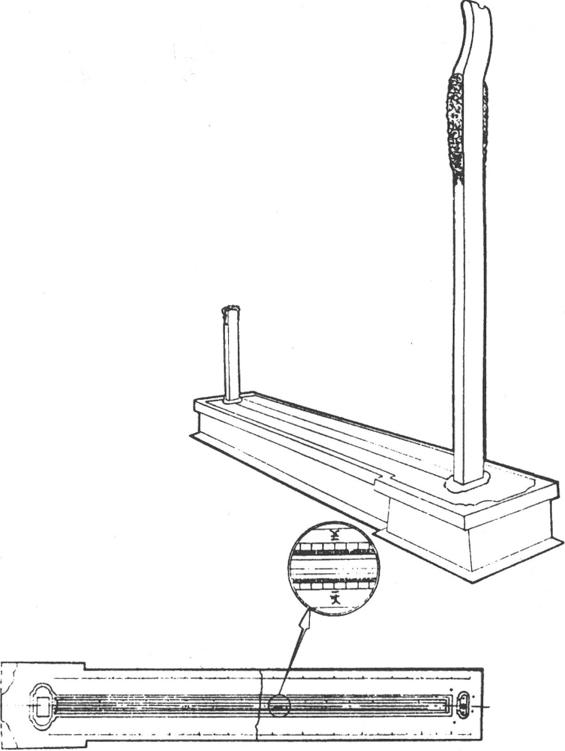
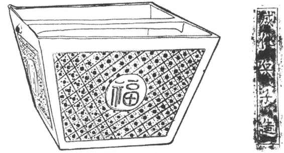
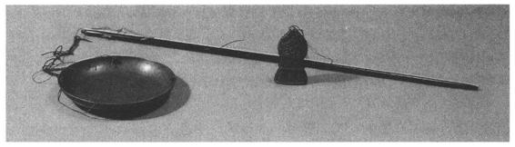
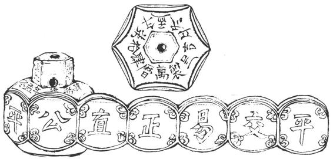

公元1368年，朱元璋攻下元大都后，逐步完成全国的统一。为了巩固政权，他注意到了让民众休养生息，发展经济，建立对外关系。在商品经济得到发展的形势下，南方出现了资本主义萌芽因素。另一方面，由于专制主义中央集权的统治进一步强化，使微弱的资本主义因素受到种种限制而发展十分缓慢，商品经济仍处在从属的地位。因此，这期间的度量衡仍主要为封建经济服务。
明代度量衡基本上是前期的延续和发展：律历尺用小尺，日常用大尺。常用尺又分营造尺、裁衣尺和量地尺三种。
明代对乐律学有重大贡献的是皇太子朱载堉。他潜心研究14年，创造了世界上最早的“十二平均律”。在研究乐律的同时，对古人累黍定尺求律管之长也提出了种种看法和见解，既有疑义，又未全盘否定。经过种种试验和求证，最后将他所得到的律尺，按原大绘成图、著于书。今实测其律尺长25.32厘米。［121］
明代的量天尺，则可从今仍陈列在南京紫金山天文台明圭表仪所刻尺度实测数中得到。（图16—28）此圭表仪是正统年间（1436—1449）制造的。后经清代改装，又在一侧加刻清尺继续使用。明代所刻尺度多已磨灭，实测其中尚可分辨的部分，推算出一尺长24.525厘米，与宋氏尺十分接近。明量天尺的发现，说明我国天文用尺自刘宋以降，经隋唐宋元传至明代，历时共一千三百余年，尺度始终保持不变。

图16-28 明代量天尺线图
朱载堉在其巨作《乐律全书》中，除了对乐律尺作了详尽的考证外，对日常用尺及升斗也作了详细的记述。朱载堉云：“今制三种尺：钞尺即裁衣尺，铜尺即量地尺，曲尺即营造尺。”［122］又引《明会典》：“洪武八年，诏中书省造大明宝钞……其制方高一尺，阔六寸许。”于是以宝钞为率准，以《明会典》为依据，详述他的比较方法和测得各尺之长，也将各尺与宝钞之比用原大绘于书。又说：营造尺“与宝钞黑边外齐”；裁衣尺“与宝钞纸边外齐”；量地尺“比钞黑边长，比钞纸边短”。［123］今曾实测国家博物馆藏完整的“大明宝钞”数十张，与朱载堉图示相比对，尺寸皆相近，得营造尺长32厘米、量地尺32.6厘米、裁衣尺34.25厘米。又见北京故宫博物院藏一支“大明嘉靖年制”牙尺，系皇室所存。尺长32厘米，与清营造尺几乎毫厘不差。可知清承明制。而裁衣尺、量地尺皆无以比对，仅从朱载堉之说。
明代为加强赋税的管理，对量器也作了一系列规定。《明会典》记：洪武“二年，令凡斛斗秤尺，司农司照依中书省原降铁斗、铁升较定则样制造……校勘付与各州县仓库收支行用”［124］等等。朱载堉《律学新说》中记有一件成化年间颁降的铁斛，又依宝源局量地铜尺和古横黍尺，详测斛之口、底及深的尺寸，可求得铁斛容积，折合1升为1022.3立方厘米和1008.44立方厘米。今仅见国家博物馆藏一件明代铁斗，四壁各铸阳文，组成“福寿康宁”底部铸阳文“成化兵子造”。（图16—29）实测容9600毫升，［125］小于朱载堉所测之铁斛。在资料缺乏的条件下，难以确定明代容量一升之值。今得清代标准量器“户部校铁方升”一件，有文献可考，实测数据可靠，得1035毫升。清承明制，暂以此厘定为明代一升之值。

图16-29 明代成化兵子铜斗线图及铭文
流传至今的明代权衡器，既有砝码，又有秤砣和等秤，还出土了一定数量的定量银锭。（图16—30）其中一件万历年间瓷秤砣，鼻纽和权体皆呈六面体。纽上相对称的两面书写“金玉”、“富贵”。权体的每一面书写一个字，连成“公平交易，正直”。这些代表着商业经营思想的词汇烧制在度量衡器具上，正是资本经济萌芽的一种反映。（图16—31）

图16-30 明代万历年造戥秤

图16-31 明代瓷秤砣线图
关于明代一斤的量值，虽有许多实物可供考订，但每一组数值都有偏差，从四组砝码实测数推算一斤分别重593.8克、538克、593.8克和582克；两支等秤折合每斤重573克、584克；43件银铤一斤重583—629克不等，暂时还很难确定一个标准值。而清代却有十分准确的标准值，故亦依清一斤合596.8克为明代厘定值。［126］